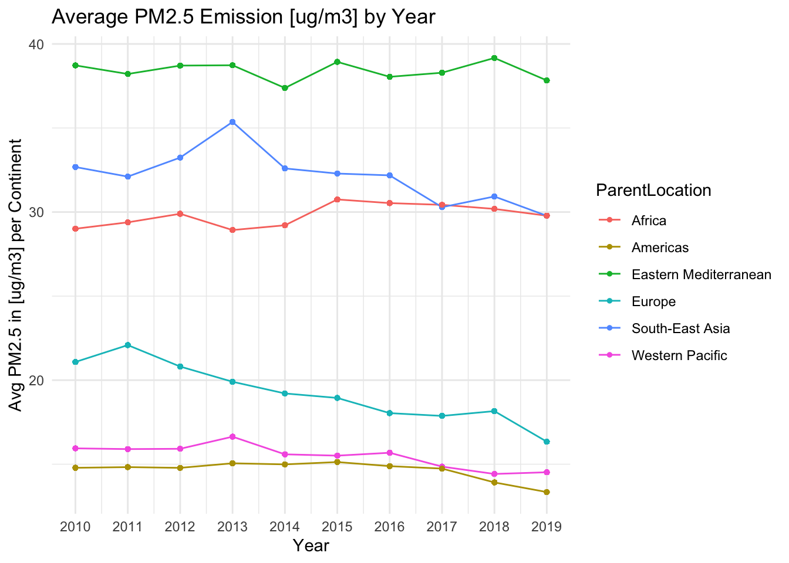
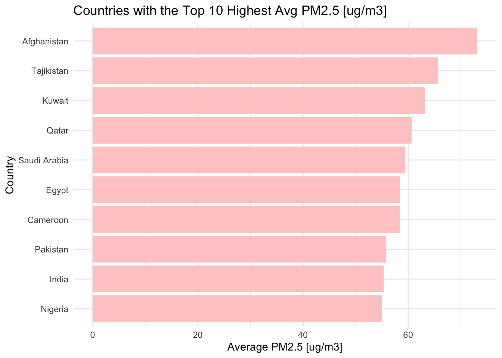
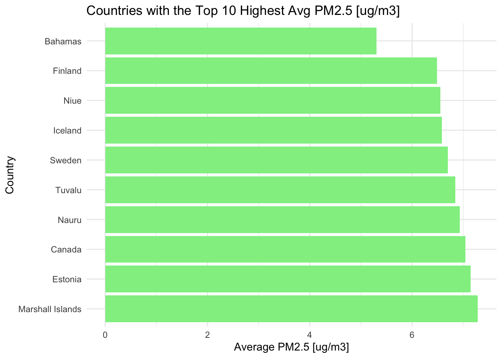

The following objects are masked from 'package:stats':
filter, lag
The following objects are masked from 'package:base':
intersect, setdiff, setequal, union
Code
# Read datadf <-read.csv("selected_data.csv")
Change for last 10 years
Code
data <- df %>%group_by(Period) %>%mutate(YearlyE =mean(FactValueNumeric))ggplot(data, aes(x = Period, y = YearlyE)) +geom_line() +geom_point(size =2) +theme_minimal() +labs(title ="Average PM2.5 Emission [ug/m3] by Year",x ="Year",y ="Avg PM2.5 [ug/m3] Worldwide") +scale_x_continuous(breaks =seq(min(data$Period), max(data$Period), by =1))
We can clearly see the PM2.5 emission is generally decreasing over years.
Change over time for different continents.
Code
data <- data %>%group_by(ParentLocation, Period) %>%mutate(YearlyContE =mean(FactValueNumeric)) %>%ungroup()ggplot(data, aes(x = Period, y = YearlyContE, color = ParentLocation)) +geom_line() +geom_point(size =1) +theme_minimal() +labs(title ="Average PM2.5 Emission [ug/m3] by Year",x ="Year",y ="Avg PM2.5 in [ug/m3] per Continent") +scale_x_continuous(breaks =seq(min(data$Period), max(data$Period), by =1))

It is clear that Europe has the most significant decrease in the world while Africa and Eastern Mediterranean has a stable PM2.5 over last 10 years.
Code
ggplot(data, aes(x = Period, y = YearlyContE)) +geom_boxplot() +stat_summary(fun = mean, geom ="point", shape =20, size =1, color ="blue") +facet_wrap(~ ParentLocation) +theme_minimal() +labs(title ="PM2.5 Emission [ug/m3]",x ="Year",y ="PM2.5 [ug/m3] Range per Continent")
Warning: Continuous x aesthetic
ℹ did you forget `aes(group = ...)`?
The boxplots further shows that Europe has the largest variation across years, which corresponds to our observation for previous plot, while Africa and Eastern Mediterranean has a stable PM2.5 since the length of boxplot is small.
Continent Correlation
This explores the relationship between country and PM2.5 level.
Code
data <- data %>%group_by(ParentLocation) %>%mutate(ContE =mean(FactValueNumeric)) %>%ungroup()data <- data %>%group_by(Location) %>%mutate(LocE =mean(FactValueNumeric)) %>%ungroup()top_countries <- data %>%distinct(Location, LocE) %>%top_n(10, LocE)bot_countries <- data %>%distinct(Location, LocE) %>%top_n(-10, LocE)ggplot(top_countries, aes(x =reorder(Location, LocE), y = LocE)) +geom_bar(stat ="identity", fill ="#FFCCCC") +coord_flip() +labs(title ="Countries with the Top 10 Highest Avg PM2.5 [ug/m3]",x ="Country",y ="Average PM2.5 [ug/m3]") +theme_minimal()

Code
ggplot(bot_countries, aes(x =reorder(Location, -LocE), y = LocE)) +geom_bar(stat ="identity", fill='lightgreen') +coord_flip() +labs(title ="Countries with the Top 10 Highest Avg PM2.5 [ug/m3]",x ="Country",y ="Average PM2.5 [ug/m3]") +theme_minimal()

These plots shows that the our continent analysis makes sense since countries with the best and worst air quality corresponds with the continent distribution.
Let’s further define a ‘Polluted Percentage’, which is the percentage of countries that have an average PM 2.5 over 2010 to 2019 in each continent. Let’s test whether the continent average PM 2.5 is biased by the number of countries.
This corresponds to our previous analysis that Eastern Mediterranean has the highest PM 2.5 level. It also shows that Africa’s average air quality was lowered by a small portion of countries which have serious air pollution.
Location type
This part, let’s explore the relationship between the 4 main resident types, Town, Rural, Urban, and Cities, and PM2.5 level.
Code
data <- data %>%group_by(Dim1) %>%mutate(LotyE =mean(FactValueNumeric)) %>%ungroup()d_data <-unique(data[c("Dim1", "LotyE")])ggplot(d_data, aes(x =reorder(Dim1, LotyE), y = LotyE, fill=-LotyE)) +geom_bar(stat ="identity") +labs(title ="Avg PM2.5 level [ug/m3] for different location type",x ="Location Type",y ="Average PM2.5 [ug/m3]") +theme_minimal()
The result are pretty close but there is a clear evidence Rural and Towns, those places with a smaller population density tend to have a better air quality.
Let’s further analyze how location type can be related to continents.
Code
data <- data %>%group_by(ParentLocation, Dim1) %>%mutate(CtentD =mean(FactValueNumeric)) %>%ungroup()d_data <-unique(data[c("ParentLocation", "Dim1", "CtentD")])ggplot(d_data, aes(x =reorder(Dim1, CtentD), y = CtentD, fill =-CtentD)) +geom_bar(stat ="identity") +facet_wrap(~ ParentLocation) +coord_flip() +labs(x ="Location Type", y ="PM2.5 Level [ug/m3]", title ="Avg PM2.5 level [ug/m3] by Continent and Resident Type") +theme_minimal()
The plot reveals that the pattern among different location types for all continents are similar.